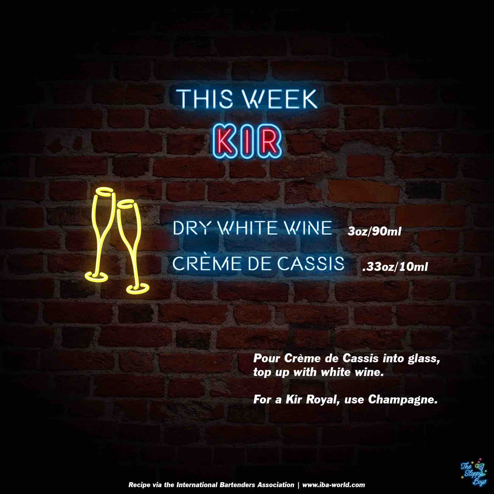

Sloppy Drinks
Podcast
About

Kir
Ingredients
Dry White Wine (3oz/90ml)
Creme de Cassis (.33oz/10ml)
Steps
Pour Creme de Cassis into glass, top up with white wine.
For a Kir Royal, use Champagne.
Notes
Episode 132 - Kir (April 28, 2023)
IBA Kir Recipe
Artwork by The Sloppy Boys